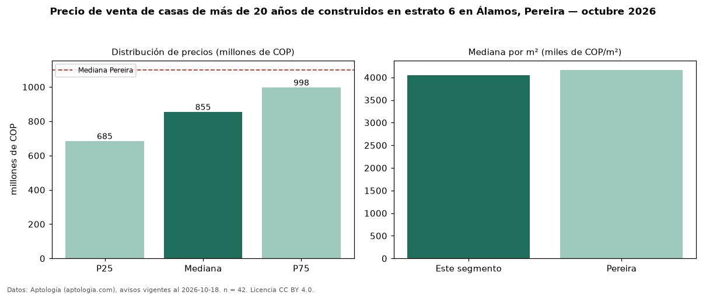

Precio de venta de casas de más de 20 años de construidos en estrato 6 en Álamos, Pereira — octubre 2026
COP 855 millones es el precio mediano de casas de más de 20 años de construidos en estrato 6 en venta en Álamos, Pereira (n = 42 avisos). Frente a la mediana de las casas en estrato 6 en venta de Álamos (COP 800 millones, n = 75), queda 7 % por encima; este segmento reúne el 56 % de esos avisos. Por metro cuadrado, la mediana es COP 4,04 millones/m² (n = 41), 0 % por debajo de las casas en estrato 6 en venta de Álamos (COP 4,05 millones/m²). El área mediana anunciada es 213 m². El segmento con más oferta es el de 3 o más habitaciones (42 avisos, mediana COP 855 millones). La administración mediana declarada es COP 735.000 al mes (n = 36). La mediana de todas las casas en venta de Pereira es COP 1,10 mil millones (−22 % de diferencia). La mitad central de los avisos va de COP 685 millones a COP 998 millones (razón 1,5), una dispersión moderada. Datos: Aptología (aptologia.com), CC BY 4.0 — https://www.aptologia.com/casas-en-venta/pereira/alamos. Archivos: PDF, CSV con las cifras y gráfica PNG.

| Avisos únicos | 42 |
|---|---|
| Percentil 25 | COP 685.000.000 |
| Mediana | COP 855.000.000 |
| Percentil 75 | COP 997.500.000 |
| Mediana por m² | COP 4.044.943 |
Fuente: avisos vigentes de portales inmobiliarios recopilados por Aptología, deduplicados (mínimo 30 avisos únicos por celda). Precios pedidos, no cerrados. Fecha: 2026-10-18.